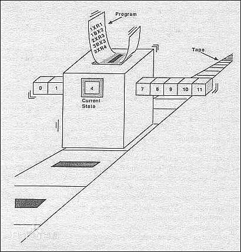

图灵
图灵
艾伦·麦席森·图灵（Alan Mathison Turing，1912年6月23日－1954年6月7日），英国数学家、逻辑学家，被称为计算机科学之父，人工智能之父。
图灵机
停机问题通俗地说，停机问题就是判断任意一个程序是否能在有限的时间之内结束运行的问题。该问题等价于如下的判定问题：是否存在一个程序P，对于任意输入的程序w，能够判断w会在有限时间内结束或者死循环。有人猜测图灵机模型是图灵在思考停机问题而顺带设计出来的.
图灵的基本思想是用机器来模拟人们用纸笔进行数学运算的过程，它运算过程看作下列两种简单的动作：
- 在纸上写上或擦除某个符号；
- 把注意力从纸的一个位置移动到另一个位置；
逻辑结构上图灵机有四个部分组成:
- 一个无限长的存储带，带子有一个个连续的存储格子组成，每个格子可以存储一个数字或符号
- 一个读写头，读写头可以在存储带上左右移动，并可以读、修改存储格上的数字或符号
- 内部状态存储器，该存储器可以记录图灵机的当前状态，并且有一种特殊状态为停机状态
- 控制程序指令，指令可以根据当前状态以及当前读写头所指的格子上的符号来确定读写头下一步的动作（左移还是右移），并改变状态存储器的值，令机器进入一个新的状态或保持状态不变。
图灵完备
可图灵指在可计算性理论中，编程语言或任意其他的逻辑系统如具有等用于通用图灵机的计算能力。换言之，此系统可与通用图灵机互相模拟。
简单来说，能够抽象成图灵机的系统或编程语言就是图灵完备的；一切可计算的问题图灵机都能计算，因此满足这样要求的逻辑系统、装置或者编程语言就叫图灵完备的。
在可计算性理论里，如果一系列操作数据的规则（如指令集、编程语言、细胞自动机）按照一定的顺序可以计算出结果，被称为图灵完备（turing complete）。
一个有图灵完备指令集的设备被定义为通用计算机。如果是图灵完备的，它（计算机设备）有能力执行条件跳转（if、while、goto语句）以及改变内存数据。如果某个东西展现出了图灵完备，它就有能力表现出可以模拟原始计算机，而即使最简单的计算机也能模拟出最复杂的计算机。所有的通用编程语言和现代计算机的指令集都是图灵完备的（C++ template就是图灵完备的），都能解决内存有限的问题。图灵完备的机器都被定义有无限内存，但是机器指令集却通常定义为只工作在特定的、有限数量的RAM上。
图灵完备的语言，有循环执行语句，判断分支语句等。理论上能解决任何算法。但有可能进入死循环而程序崩溃。
图灵不完备也不是没有意义，有些场景我们需要限制语言本身。如限制循环和递归, 可以保证该语言能写的程序一定是终止的。
比特币的脚本系统是图灵不完备的，以太坊的智能合约系统是图灵完备的。各有优缺点，图灵不完备会更安全些，图灵完备会更智能些。
IO模型
IO可以理解为对流的操作，当一个read操作发生时，它会经历两个阶段：
- 等待数据准备。
- 将数据从内核拷贝到进程中
同步阻塞IO

用户线程通过系统调用read发起IO读操作，由用户空间转到内核空间。内核等到数据包到达后，然后将接收的数据拷贝到用户空间，完成read操作。
同步非阻塞IO

由于socket是非阻塞的方式，因此用户线程发起IO请求时立即返回。但并未读取到任何数据，用户线程需要不断地发起IO请求，直到数据到达后，才真正读取到数据，继续执行。
即用户需要不断地调用read，尝试读取socket中的数据，直到读取成功后，才继续处理接收的数据。整个IO请求的过程中，虽然用户线程每次发起IO请求后可以立即返回，但是为了等到数据，仍需要不断地轮询、重复请求，消耗了大量的CPU的资源。一般很少直接使用这种模型，而是在其他IO模型中使用非阻塞IO这一特性。
IO多路复用

IO多路复用模型是建立在内核提供的多路分离函数select基础之上的，使用select函数可以避免同步非阻塞IO模型中轮询等待的问题。
用户首先将需要进行IO操作的socket添加到select中，然后阻塞等待select系统调用返回。当数据到达时，socket被激活，select函数返回。用户线程正式发起read请求，读取数据并继续执行。
从流程上来看，使用select函数进行IO请求和同步阻塞模型没有太大的区别，甚至还多了添加监视socket，以及调用select函数的额外操作，效率更差。但是，使用select以后最大的优势是用户可以在一个线程内同时处理多个socket的IO请求。用户可以注册多个socket，然后不断地调用select读取被激活的socket，即可达到在同一个线程内同时处理多个IO请求的目的。而在同步阻塞模型中，必须通过多线程的方式才能达到这个目的。
异步IO

“真正”的异步IO需要操作系统更强的支持。在IO多路复用模型中，事件循环将文件句柄的状态事件通知给用户线程，由用户线程自行读取数据、处理数据。而在异步IO模型中，当用户线程收到通知时，数据已经被内核读取完毕，并放在了用户线程指定的缓冲区内，内核在IO完成后通知用户线程直接使用即可。
闭包
闭包的本质源自两点，词法作用域和函数当作值传递。
- 词法作用域就是按照代码书写时的样子，内部函数可以访问函数外面的变量。
- 函数当作值传递，就是可以把函数当作一个值来赋值，当作参数传给别的函数，也可以把函数当作一个值 return。一个函数被当作值返回时，也就相当于返回了一个通道，这个通道可以访问这个函数词法作用域中的变量，即函数所需要的数据结构保存了下来，数据结构中的值在外层函数执行时创建，外层函数执行完毕时理因销毁，但由于内部函数作为值返回出去，这些值得以保存下来。而且无法直接访问，必须通过返回的函数。这也就是私有性。本来执行过程和词法作用域是封闭的，这种返回的函数就好比是一个虫洞。
显然，闭包的形成很简单，在执行过程完毕后，返回函数，或者将函数得以保留下来，即形成闭包。
闭包可以理解成：一个持有外部环境变量的函数就是闭包。理解闭包通常有着以下几个关键点：
- 函数
- 自由变量
- 环境
举例如下：
1 | function a(x, y) { |
“闭”的意思不是封闭内部状态，而是封闭外部状态，当外部状态的scope失效的时候，还有一份保留在内部状态里，就是所说的封闭外部状态。
知乎有个回答：我叫独孤求败，我在一个山洞里，里面有世界上最好的剑法，还有最好的武器。我学习了里面的剑法，拿走了最好的剑。离开了这里。我来到这个江湖，快意恩仇。但是从来没有人知道我这把剑的来历，和我这一身的武功。那山洞就是一个闭包，而我，就是那个山洞里唯一一个可以与外界交汇的地方。这山洞的一切对外人而言就像不存在一样，只有我才拥有这里面的宝藏！